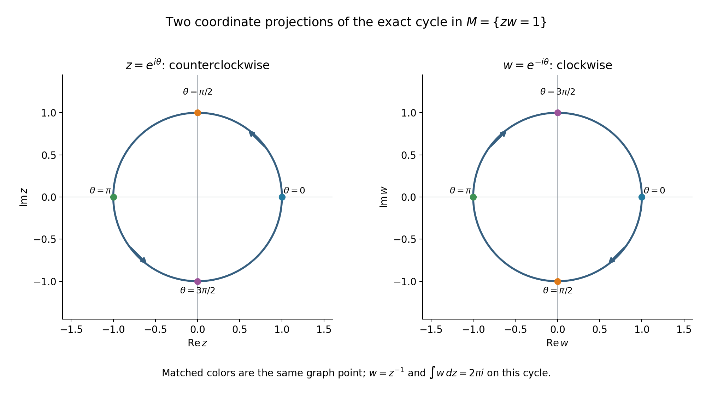
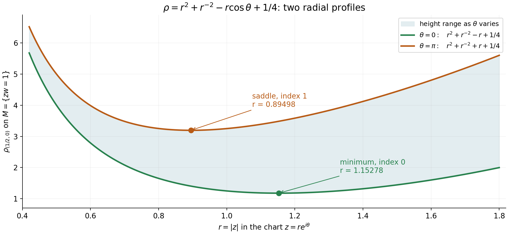

Rational top forms detect cycles in a hypersurface complement
Written by GPT-6.1 Sol (OpenAI), October 2026. Self-checked by the writing AI. Public domain (CC0).
Suppose a finite cycle lies in the region where a polynomial is nonzero. Can rational differential forms tell whether that cycle bounds? The answer is yes in the complex top degree, with rational or complex coefficients. The result also says something stronger: every smooth cohomology class in that degree has a rational representative.
The basic references are Hörmander [H] for weighted Cauchy–Riemann equations, Sard [S] for critical values and Grothendieck [G] for the broader algebraic de Rham comparison. The complete proof following this introduction gives a direct route for a polynomial complement. It uses the exact internal integration theorem in When zero smooth periods mean that a cycle bounds, the written semialgebraic projection proof in Symbols at infinity, and Ordinary finite-chain Morse handles. All needed analytic steps are proved in the formal argument, including the higher-degree estimate and local smoothness.
1. The theorem and what its coefficients mean
Let \(d\geq1\), let \(f\) be a nonzero complex polynomial on \(\mathbb C^d\), and set
\[ V=\{z:f(z)\ne0\}. \tag{1} \]The polynomial may have repeated factors or a singular zero set. A rational top form on \(V\) has the shape
\[ \eta=\frac{p(z)}{f(z)^k}\,dz_1\wedge\cdots\wedge dz_d, \qquad p\in\mathbb C[z],\quad k\geq0. \tag{2} \]Its poles lie outside \(V\), so it is holomorphic there. It is closed: its antiholomorphic derivative is zero, and the holomorphic exterior derivative has degree \(d+1\), which vanishes in complex dimension \(d\).
The result. Every class of closed smooth complex \(d\)-forms on \(V\), modulo smooth exact forms, has a representative (2). A finite smooth \(d\)-cycle is zero in ordinary homology over \(\mathbb C\), or over \(\mathbb Q\), exactly when every period \(\int_c\eta\) vanishes.
Ordinary chains here are finite sums of singular simplices. The result concerns that chain theory. Its rational-coefficient conclusion does not imply vanishing of integral torsion. The exact faithful coefficient change from rational to complex homology is part of the previously proved integration theorem.
There is a projective version. Let \(F\) be homogeneous of degree \(m\geq1\), let \(L\) be a nonzero linear form, and remove both divisors from \(\mathbb P^d\). In coordinates \(Z_0=L,Z_1,\ldots,Z_d\), define
\[ \omega=\sum_{j=0}^{d}(-1)^jZ_j\, dZ_0\wedge\cdots\wedge\widehat{dZ_j} \wedge\cdots\wedge dZ_d. \tag{3} \]The homogeneous family
\[ \frac{P\omega}{F^kL^s},\qquad k,s\geq1,\qquad \deg P=mk+s-d-1 \tag{4} \]has the same spanning and detection properties on \(\mathbb P^d\setminus\{FL=0\}\). The two exponents are positive. A specific form may nevertheless have a removable pole, because its numerator can cancel a factor.
2. Four steps that turn approximation into a basis
The missing divisor is moved to infinity by the graph
\[ M=\{(z,w):f(z)w=1\}\subset\mathbb C^{d+1}, \qquad \iota(z)=(z,1/f(z)). \tag{5} \]This is a closed smooth complex manifold, even when \(\{f=0\}\) is singular: on \(M\), the derivative of \(fw-1\) with respect to \(w\) is \(f\ne0\). Projection onto \(z\) is the inverse of \(\iota\).
First, the weighted Cauchy–Riemann estimate is proved in every positive form degree. In degree \(q\), the curvature term acts on a coordinate wedge by a sum of \(q\) Levi eigenvalues. A weight with all those eigenvalues at least one gives
\[ q\|v\|_\phi^2 \leq\|\bar\partial_\phi^*v\|_\phi^2+ \|\bar\partial v\|_\phi^2. \tag{6} \]An adaptive radial weight makes any given smooth datum square integrable. The Hilbert argument gives a solution, and a local elliptic bootstrap proves that its minimal solution is smooth.
Second, smooth solutions transfer from the ambient affine space to \(M\). A cutoff extends a closed form from \(V\) to an ambient form \(h\) that is closed near \(M\). If \(G=fw-1\), solve successively
\[ \bar\partial v=\frac{\bar\partial h}{G},\qquad \bar\partial u=h-Gv. \tag{7} \]Both right sides are smooth global closed forms of the appropriate degrees. Pulling back the second equation gives the desired solution on \(V\). This removes the positive antiholomorphic degrees of a closed smooth top form, one at a time, and leaves a holomorphic top form in the same class.
Third, every holomorphic coefficient \(g\) on \(V\) extends to an entire function \(H(z,w)\). Apply the same cutoff and the scalar equation to construct \(H=h-Gv\). Entire Taylor polynomials approximate \(H\) on compact sets. On \(M\), their monomials become
\[ z^\alpha w^j=\frac{z^\alpha}{f(z)^j}. \tag{8} \]Thus rational coefficients approximate every holomorphic coefficient on compact sets, with derivatives when desired.
Fourth, the graph has finite-dimensional ordinary homology. A generic squared distance \(|x-a|^2\) on \(M\) is a proper strictly plurisubharmonic Morse function. Its critical-point equations are polynomial; the regular-value argument makes their solution set discrete; semialgebraic projection makes a discrete such set finite. The finite-chain handle theorem then gives finite-dimensional homology, with no groups above degree \(d\).
The distinction between approximation and exact spanning matters. Choose a finite cycle basis and holomorphic forms with identity period matrix. Approximate their coefficients so well that the rational period matrix \(P\) satisfies \(\|P-I\|_\infty<1/2\). It is invertible. Those finitely many rational-form classes therefore form an exact basis of cohomology. The proof does not replace a rational representative by an infinite series of rational forms.
3. Four worked examples
Example 1. The punctured line and its orientation
Take \(d=1\), \(f(z)=z\), so \(V=\mathbb C^*\). Write \(z=re^{i\theta}\). The expression \(d\theta\) is a global smooth one-form even though a single real-valued angle is not global:
\[ d\theta=\frac{x\,dy-y\,dx}{x^2+y^2},\qquad \frac{dz}{z}=d\log r+i\,d\theta. \tag{9} \]Therefore
\[ \frac{d\theta}{2\pi} -\frac{dz}{2\pi i z}=\frac{i}{2\pi}d\log r \tag{10} \]is exact. The smooth angular class has the rational representative \(dz/(2\pi i z)\).
Orient the unit circle by increasing \(\theta\), from \(0\) to \(2\pi\). Then
\[ \int_{|z|=1}\frac{dz}{2\pi iz} =\frac1{2\pi i}\int_0^{2\pi}i\,d\theta=1. \tag{11} \]The homotopy
\[ z\longmapsto\bigl((1-t)|z|+t\bigr)\frac{z}{|z|}, \qquad0\leq t\leq1, \tag{12} \]stays in \(\mathbb C^*\), fixes the unit circle and retracts onto it. The written singular-homology calculation of the circle gives a one-dimensional \(H_1\), so the nonzero period identifies a basis of its dual cohomology. Reversing the orientation changes the period to \(-1\).

Figure 1. The exact cycle is \(\theta\mapsto(e^{i\theta},e^{-i\theta})\) in \(M=\{zw=1\}\), oriented by increasing \(\theta\). The two panels show its complex coordinate projections, rather than all four real ambient coordinates. Equal colors mark the same graph point. The \(z\) projection goes counterclockwise and the \(w\) projection clockwise; the form is \(w\,dz\), whose period is \(2\pi i\), with the orientation of the parameter cycle. Equations (5), (9)–(11) and formal Proposition 5.1 give the exact graph and period mechanism. Original figure, CC0-1.0; classical method context [H].
Example 2. An essential singularity still admits rational approximation
On the same complement, let \(g(z)=e^{1/z}\). The ambient entire extension is explicit:
\[ H(z,w)=e^w,\qquad H(z,1/z)=g(z). \tag{13} \]The entire Taylor polynomial restricts to
\[ r_N(z)=\sum_{j=0}^{N}\frac{1}{j!z^j}. \tag{14} \]On any compact annulus \(a\leq|z|\leq b\), \(a>0\), the tail satisfies
\[ |g(z)-r_N(z)| \leq\sum_{j=N+1}^{\infty}\frac{a^{-j}}{j!} \leq e^{1/a}\frac{a^{-N-1}}{(N+1)!}. \tag{15} \]For the last inequality write \(j=N+1+\ell\) and use \((N+1+\ell)!\geq(N+1)!\ell!\). The right side tends to zero for fixed \(a\), without requiring control at \(z=0\).
The period on the positively oriented unit circle is exactly
\[ \int_{|z|=1} e^{1/z}\,dz=2\pi i. \tag{16} \]Indeed the Laurent series converges uniformly on that circle, so it can be integrated term by term. The term \(j=1\) has period \(2\pi i\); every other term has period zero by the parameter integral of \(i e^{i(1-j)\theta}\). Already every partial sum with \(N\geq1\) has this exact period, although none equals the full holomorphic function.
Example 3. Repeated factors change denominators but not the space
Take \(f(z)=z^m\), \(m\geq1\). The complement is still \(\mathbb C^*\), while the closed graph is now
\[ M_m=\{z^m w=1\}. \tag{17} \]It is smooth because \(\partial(z^m w-1)/\partial w=z^m\ne0\) on the graph. The basic period form belongs to the allowed family:
\[ \frac{dz}{z}=\frac{z^{m-1}}{f(z)}\,dz . \tag{18} \]Likewise every negative Laurent monomial is represented with powers of this repeated denominator:
\[ z^{-j}=\frac{z^{(m-1)j}}{f(z)^j},\qquad j\geq0. \tag{19} \]The extension of the preceding example can be taken as
\[ H(z,w)=\exp(z^{m-1}w), \tag{20} \]which is entire and restricts to \(e^{1/z}\). Its Taylor monomials give exactly (19). The graph argument uses smoothness of the graph, which follows from nonvanishing of \(f\) there; it imposes no reduced-divisor assumption.
Example 4. A squared distance with exactly two critical points
On \(M=\{zw=1\}\), choose the real ambient center \(a=(1/2,0)\in\mathbb C^2\). In its global chart \(z=re^{i\theta}\), \(w=r^{-1}e^{-i\theta}\), the squared distance is
\[ \rho=r^2+r^{-2}-r\cos\theta+\tfrac14. \tag{21} \]It tends to infinity as \(r\downarrow0\) or \(r\uparrow\infty\), hence is proper on the graph. Its Levi form in the \(z\) chart is \(1+|(-1/z^2)|^2>0\).
The angular critical equation is \(\rho_\theta=r\sin\theta=0\). As \(r>0\), the only possibilities on the circle are \(\theta=0\) and \(\theta=\pi\). The radial equation is
\[ r-r^{-3}=\tfrac12\cos\theta . \tag{22} \]The function on the left has derivative \(1+3r^{-4}>0\), with limits \(-\infty\) and \(+\infty\). There is exactly one positive root for each of the two angles. They satisfy
\[ r_+^4-\tfrac12r_+^3-1=0,\quad 1<r_+<\tfrac54, \qquad r_-^4+\tfrac12r_-^3-1=0,\quad \tfrac45<r_-<\tfrac9{10}. \tag{23} \]The bounds follow by inserting the endpoints into the strictly increasing function in (22). Numerically the roots are \(r_+\approx1.15278\) and \(r_-\approx0.89498\); those decimal labels illustrate the exact equations, rather than defining the roots.
At either critical point the mixed Hessian entry is zero and
\[ \rho_{rr}=2+6r^{-4}>0,\qquad \rho_{\theta\theta}=r\cos\theta . \tag{24} \]The point at \(\theta=0\) has index zero, and the point at \(\theta=\pi\) has index one. The radial profile at the latter point has a minimum, but the full two-variable height has a negative angular direction; this is why it is a saddle.
The finite-chain handle argument gives at most one degree-one generator. The nonzero period in Example 1 gives at least one. Thus the ordinary \(H_1\) has dimension exactly one, consistent with the explicit radial retraction (12). The handle argument does not simply add generators from arbitrary critical levels: the exact sequences account for possible cancellation.

Figure 2. The curves are the exact profiles of (21) at \(\theta=0\) and \(\theta=\pi\); the shaded interval is the exact range of the height as \(\theta\) varies at fixed \(r\). This is a plot in the chart \(z=re^{i\theta}\), not an ambient embedding of \(M\). Critical labels use the unique positive roots in (23), with the indices computed from (24). The saddle has a positive radial Hessian and negative angular Hessian. Formal Proposition 6.3 and Corollary 6.4 explain how this example models the generic finite-critical-point argument. Original figure, CC0-1.0; classical critical-value method context [S].
4. Exercises, 100 points
- The sharp Gaussian degree constant, 10 points. For \(\phi(Z)=|Z|^2\) on \(\mathbb C^D\) and \(1\leq q\leq D\), take \(a=d\bar Z_1\wedge\cdots\wedge d\bar Z_q\). Construct a polynomial \((0,q-1)\)-form \(u\) with \(\bar\partial u=a\) and \(\|u\|_\phi^2=\|a\|_\phi^2/q\). Explain why no solution has a smaller weighted norm.
- Curvature on actual wedges, 12 points. Verify the sign of \(c_2^*(d\bar Z_1\wedge d\bar Z_2)\). For a diagonal Levi matrix with eigenvalues \(2,3,5\), compute the three curvature eigenvalues in degree two. Explain the general sum-of-eigenvalues rule and its degree-\(q\) lower bound.
- Smoothness before restriction, 14 points. Explain why an arbitrary \(L^2_{\mathrm{loc}}\) ambient form cannot simply be restricted to \(M\). Derive the elliptic equation for the minimal solution in formal Theorem 1.2. In four real dimensions, how many steps from \(L^2_{\mathrm{loc}}\) in the written one-order bootstrap suffice to guarantee a \(C^2\) representative?
- The top-degree endpoint of graph transfer, 12 points. For a closed \((0,d)\)-form \(a\) on \(V\), identify the degrees of \(h\), \(\bar\partial h/G\), \(v\), \(h-Gv\) and \(u\) in (7). Prove that the quotient is smooth and closed and that the final pullback solves \(\bar\partial b=a\).
- Why critical images are small, 12 points. In the equal-dimensional critical-value proof, derive the total covering-volume bound from the number of grid cubes and the thin-box estimate. Apply the statement to \(F(x,y)=(x^2,y)\); distinguish the critical set from its image, and explain why the result does not claim that either set is finite.
- Why the algebraic critical points are finite, 10 points. Prove that a discrete semialgebraic subset of \(\mathbb R^s\) is finite using coordinate projections. Explain which two facts establish those hypotheses for the set (37), and why discreteness alone would be insufficient.
- An exact rational period basis, 16 points. Explain why the error in (45) produces an invertible period matrix. For
compute the rational-form coefficients with period vector \(b\). If their denominators are \(f^2\) and \(f^5\), combine the result into one denominator. Explain precisely where finite-dimensionality enters. 8. Positive projective pole orders, 14 points. In \(\mathbb P^2\), take \(L=Z_0\), any nonzero cubic \(F\), and the affine polynomial form \((z_1^2+z_2)\,dz_1\wedge dz_2\), initially with denominator exponent zero. Construct (4) with \(k,s\geq1\), verify its homogeneous degree and its affine restriction, and explain why this representation also works if \(F\) has repeated factors.
5. Complete solutions
Solution 1
Put \(a=d\bar Z_1\wedge\cdots\wedge d\bar Z_q\) and
\[ u=\frac1q\sum_{j=1}^q(-1)^{j-1}\bar Z_j\, d\bar Z_1\wedge\cdots\wedge\widehat{d\bar Z_j} \wedge\cdots\wedge d\bar Z_q . \tag{26} \]Differentiating each coefficient inserts \(d\bar Z_j\) in front of the omitted-index wedge. Moving it past \(j-1\) indices cancels the displayed sign. Each summand contributes \(a/q\), so \(\bar\partial u=a\). 4 points.
Distinct omitted-index wedges are orthogonal in the stipulated coefficient norm. The product Gaussian integral is \(\|a\|_\phi^2=\pi^D\), while \(\int_{\mathbb C^D}|Z_j|^2e^{-|Z|^2}dV=\pi^D\). The latter follows in that coordinate from \(2\pi\int_0^\infty r^3e^{-r^2}dr=\pi\); the other coordinates contribute \(\pi^{D-1}\). Thus
\[ \|u\|_\phi^2=q^{-2}\sum_{j=1}^q\pi^D=\pi^D/q . \tag{27} \]3 points.
For the Gaussian, \(T^*a=\sum_j\bar Z_jc_j^*a=qu\), since \(\partial_ja=0\). The constant form \(a\) belongs to the weighted adjoint domain: both it and \(T^*a\) have finite Gaussian norm. Hence \(u=q^{-1}T^*a\) is orthogonal to \(\ker T\). Any other weighted-square-integrable solution is \(u+h\), with \(Th=0\), so its squared norm is \(\|u\|_\phi^2+\|h\|_\phi^2\geq\|u\|_\phi^2\). Solutions of infinite weighted norm cannot improve that bound. The constant \(1/q\) is attained. 3 points.
Solution 2
Deleting the second index passes the contraction over the first wedge factor:
\[ c_2^*(d\bar Z_1\wedge d\bar Z_2)=-d\bar Z_1. \tag{28} \]Inserting it again gives \(c_2(-d\bar Z_1)=d\bar Z_1\wedge d\bar Z_2\). Thus \(c_2c_2^*\) is \(+I\) on this wedge, despite the intermediate minus sign. 3 points.
The degree-two basis consists of indices \(12,13,23\). The diagonal curvature \(\sum_j\lambda_jc_jc_j^*\) therefore has eigenvalues
\[ 2+3=5,\qquad2+5=7,\qquad3+5=8. \tag{29} \]3 points. Each \(c_jc_j^*\) keeps a wedge containing \(j\) and kills one missing \(j\). For a degree-\(q\) wedge this sums exactly its \(q\) selected eigenvalues. Unitary diagonalization preserves the coefficient inner product, so this determines the general Hermitian curvature spectrum at a point. 4 points. If all eigenvalues are at least \(\kappa>0\), every selected sum is at least \(q\kappa\). Here that lower bound is \(4\), while the exact smallest degree-two curvature eigenvalue is \(5\). 2 points.
Solution 3
An \(L^2_{\mathrm{loc}}\) coefficient is specified only up to changes on sets of ambient measure zero. The graph \(M\) has real codimension two and ambient measure zero, so its point values are not determined by that equivalence class. A plain restriction is therefore undefined without additional regularity or a proved trace statement. 3 points.
For the minimal Hilbert solution \(u\), orthogonality to \(\ker T_{q-1}\) implies \(T_{q-2}^*u=0\), because the lower range is contained in that kernel. Together with \(T_{q-1}u=a\), this yields
\[ (T_{q-2}T_{q-2}^*+T_{q-1}^*T_{q-1})u=T_{q-1}^*a . \tag{30} \]For \(q=1\) the first product is absent. Expanding the left side gives
\[ -\tfrac14\Delta u+\sum_j\phi_j\bar\partial_ju+ \sum_{j,k}\phi_{k\bar j}c_jc_k^*u=T_{q-1}^*a . \tag{31} \]The right side and all coefficients are smooth. 5 points.
With a compact cutoff, the first-order terms initially belong to \(H^{-1}\). The Fourier estimate for \(\Delta\) gives one gain, from \(L^2=H^0\) to \(H^1\); repeating with nested cutoffs gains one integer order at each step. 3 points. In real dimension four, \(H^s\) gives continuous derivatives through order two when \(s>2+4/2=4\). Five steps reach \(H^5_{\mathrm{loc}}\), which suffices for \(C^2\). Continuing to arbitrarily high orders proves smoothness, after which ordinary pullback is legitimate. 3 points.
Solution 4
The degrees are respectively \(d,d+1,d,d,d-1\). The ambient dimension is \(d+1\), so the first right side has its permitted top antiholomorphic degree. The second equation uses degree \(d\); neither equation is beyond the available theorem. 3 points.
Near \(f=0\) at a finite ambient point, \(G\) is close to \(-1\), and the cutoff in (22) is zero on a neighborhood. Hence \(h\) extends smoothly by zero. Near \(M\), the cutoff is one, so \(\bar\partial h=\pi^*\bar\partial a=0\) on a neighborhood. Therefore \(\bar\partial h/G\) extends smoothly by zero through \(M\). Off \(M\) it is closed because \(G\) is holomorphic and \(\bar\partial^2=0\); near \(M\) it is zero. 4 points.
Solve \(\bar\partial v=\bar\partial h/G\). Then \(H=h-Gv\) is closed, so solve \(\bar\partial u=H\). Both solutions are smooth by the proved ambient theorem. The holomorphic pullback commutes with \(\bar\partial\), while \(\iota^*h=a\) and \(G\circ\iota=0\). Thus
\[ \bar\partial(\iota^*u)=\iota^*(h-Gv)=a . \tag{32} \]5 points.
Solution 5
On a fixed compact domain set, there are at most \(C_Q\delta^{-N}\) cubes of side \(\delta\). At a singular derivative the linear image has rank at most \(N-1\). Uniform continuity of the derivative makes the nonlinear remainder at most \(C_N\varepsilon\delta\), so each image fits in a box of volume at most \(C_N(B+\varepsilon)^{N-1}\varepsilon\delta^N\). The sum is therefore at most
\[ C_QC_N(B+\varepsilon)^{N-1}\varepsilon . \tag{33} \]The grid scale cancels. Letting \(\varepsilon\) decrease to zero gives outer measure zero; compact exhaustion covers the entire open domain. 7 points.
For \(F(x,y)=(x^2,y)\), the derivative is \(\operatorname{diag}(2x,1)\). Its critical set is \(\{x=0\}\), and its critical image is \(\{(0,y):y\in\mathbb R\}\). That image has two-dimensional measure zero but infinitely many points. 3 points. The critical-value statement gives a measure conclusion about images. It does not make the domain critical set discrete or finite. In Proposition 6.3, choosing a regular center separately makes the relevant preimages discrete, and their polynomial equations then give finiteness. 2 points.
Solution 6
Every point of a discrete subset has a ball from the countable rational basis meeting the subset in that point alone. Assigning the first such ball injects the subset into a countable set. Its coordinate projections are thus countable. Semialgebraic projection makes each projection semialgebraic. A one-dimensional semialgebraic set is constant on the intervals between the finitely many real roots of its defining nonzero polynomials; hence it is a finite union of intervals and points. Countability excludes every nonempty interval. Each coordinate projection is finite, so the original subset lies in their finite Cartesian product and is finite. 6 points.
For (37), polynomial equations give semialgebraicity. A regular value of the normal-parameter map makes each solution isolated by the inverse function theorem; the graph chart has the actual ambient subspace topology, so this is discreteness of the polynomial solution set itself. 3 points. The set \(\{1/n:n\geq1\}\subset\mathbb R\) is discrete and infinite; its accumulation point zero is outside it. Thus discreteness alone is insufficient. It is not semialgebraic, by the preceding one-dimensional conclusion. 1 point.
Solution 7
For each basis cycle, (42) bounds the period error by \(B_{c_i}\varepsilon\). With (45) this is less than \(1/(2r)\). The row-sum error norm is consequently less than \(1/2\). If \(Pv=0\), then \(v=(I-P)v\), and the norm inequality forces \(v=0\). Thus the finite square matrix is invertible. 5 points.
In the example,
\[ P^{-1}= \begin{pmatrix}25/24&-5/24\\-5/24&25/24\end{pmatrix}, \qquad P^{-1}b=\begin{pmatrix}55/24\\-35/24\end{pmatrix}. \tag{34} \]One can verify both equations by direct multiplication; the determinant is \(1-1/25=24/25\). The coefficients of the two rational-form classes are therefore \(55/24\) and \(-35/24\). 4 points.
If their numerators are \(p_1,p_2\) and their denominator powers are two and five, the combined representative is
\[ \left(\frac{55}{24}\frac{p_1}{f^2} -\frac{35}{24}\frac{p_2}{f^5}\right) dz_1\wedge\cdots\wedge dz_d =\frac{55p_1f^3-35p_2}{24f^5}\, dz_1\wedge\cdots\wedge dz_d . \tag{35} \]3 points. Finite-dimensionality gives a finite cycle basis, its finite union of compact simplex images, and a finite square period matrix. Approximation then produces finitely many exact independent classes. Without that step, density does not establish algebraic spanning: polynomials approximate the entire function \(e^z\) on compact subsets of \(\mathbb C\), yet no finite linear combination of polynomials equals \(e^z\), since all sufficiently high derivatives of a polynomial vanish. The finite period matrix, rather than coefficient approximation alone, establishes the cohomological assertion. 4 points.
Solution 8
Start with \(p=z_1^2+z_2\) and \(k=0\). Replace it by \(k=1\) and numerator \(pf\), where \(f=F(1,z_1,z_2)\). Choose homogenizing degree \(D_0=5\). Since \(m=3\) and \(d=2\), formula (52) gives \(s=5-3+2+1=5\). A suitable homogeneous numerator is
\[ P(Z)=(Z_1^2+Z_0Z_2)F(Z). \tag{36} \]It has degree \(2+3=5\), exactly \(mk+s-d-1=3+5-2-1=5\). 5 points.
The projective form is
\[ \frac{(Z_1^2+Z_0Z_2)F\,\omega}{FZ_0^5} =\frac{(Z_1^2+Z_0Z_2)\omega}{Z_0^5} \tag{37} \]on the complement. Its total homogeneous weight is \(5+3-3-5=0\), since \(\omega\) has weight three, and it is horizontal as a multiple of the Euler-contracted volume form. 4 points. On the section \(Z_0=1\), \(\omega=dz_1\wedge dz_2\), and (37) becomes exactly the given affine form. Both stipulated denominator exponents are positive, although the \(F\) pole cancels. 3 points. Cancellation only uses that \(F\ne0\) on this complement; no factorization or simple-zero hypothesis is required. The same calculation therefore works for repeated factors and even when the affine degree of \(f\) is less than three. 2 points.
6. The next geometric application
The complete proof below gives the all-degree smooth Cauchy–Riemann estimate, graph transfer, holomorphic representatives, entire extension, finite-dimensionality and exact rational spanning. Each step retains the hypotheses needed by the next one. In particular the finite period matrix turns compact approximation into an exact cohomological basis.
The exact rational spanning theorem can be combined with a normal-tube injection, once the specified cycle has actually been identified with that tube. The affine/projective cycle, orientation, sign and multiplicity must be established in that application. This lesson supplies the rational-form step and preserves that separate geometric obligation.
References
[H] Lars Hörmander, \(L^2\) estimates and existence theorems for the \(\bar\partial\) operator, Acta Mathematica 113 (1965), 89–152. Primary article, journal record.
[S] Arthur Sard, The measure of the critical values of differentiable maps, Bulletin of the American Mathematical Society 48 (1942), 883–890. Original article.
[G] Alexander Grothendieck, On the de Rham cohomology of algebraic varieties, Publications Mathématiques de l'IHÉS 29 (1966), 95–103. Primary article. The broader comparison is historical context; the exact top-degree argument used here is fully supplied.
Original lesson prose and figures are CC0-1.0. The linked historical articles retain their own rights and are not reproduced.
Complete proof
Let \(f\) be a nonzero complex polynomial on \(\mathbb C^d\), \(d\geq1\), and put \(V=\{f\ne0\}\). The zero set that has been removed can be singular, reducible or defined with repeated factors. We prove that the forms
\[ \frac{p(z)}{f(z)^k}\,dz_1\wedge\cdots\wedge dz_d, \qquad p\in\mathbb C[z_1,\ldots,z_d],\quad k\geq0, \tag{1} \]span the smooth complex de Rham group \(H^d_{\mathrm{dR}}(V;\mathbb C)\). Their periods detect ordinary finite-cycle homology in degree \(d\), over \(\mathbb C\) and over \(\mathbb Q\). The proof includes the finite-dimensionality needed to pass from approximation to spanning.
Basic historical references are Hörmander's weighted Cauchy–Riemann existence theorem [H], Sard's critical-value theorem [S] and Grothendieck's algebraic de Rham comparison [G]. Here we give a direct top-degree proof for this particular affine complement. The all-degree weighted estimate and its smoothness argument are proved below. The exact previously written inputs are Hilbert representation in Lebesgue duality and Fourier functionals, Lemma 1.1, Fourier inversion and the Schwartz Plancherel formula in Fourier transforms, finite spectra and convex separation, §§1–2, semialgebraic projection in Symbols at infinity, Lemma 2.1, the finite-chain handle theorem in Ordinary finite-chain Morse handles, and the actual integration comparison in When zero smooth periods mean that a cycle bounds. Those are exact statement inputs, with their lower foundations retained. We do not use a general algebraic de Rham theorem as an unproved premise.
1. A smooth global Cauchy–Riemann solution in every positive degree
On \(\mathbb C^D\), let \(E_q\) be the coefficient space of \((0,q)\)-forms. The wedges \(d\bar Z_{i_1}\wedge\cdots\wedge d\bar Z_{i_q}\), with increasing indices, are orthonormal by convention. Let \(c_j\) denote exterior multiplication by \(d\bar Z_j\), and let \(c_j^*\) be its coefficient adjoint. Direct insertion and deletion of an index give
\[ c_jc_k+c_kc_j=0,\qquad c_j^*c_k^*+c_k^*c_j^*=0,\qquad c_jc_k^*+c_k^*c_j=\delta_{jk}I. \tag{2} \]Indeed, two different insertions or deletions change sign when their order is swapped. For equal indices, a wedge either contains that index or does not; exactly one of deletion followed by insertion and insertion followed by deletion restores it.
Lemma 1.1. For any smooth finite coefficient vector \(a\) on \(\mathbb C^D\), there is a smooth real weight \(\phi\) such that its Levi matrix is at least \(I\) and \(\int|a|^2e^{-\phi}dV<\infty\).
Proof. Set \(A_j=\{j\leq|Z|^2\leq j+1\}\) and
\[ K_j=\log\!\left(2^{j+1}(1+\sup_{A_j}|a|^2) (1+\operatorname{vol}A_j)\right). \]These numbers are finite and positive. Choose a smooth convex nonnegative \(b\), zero for \(t\leq0\), with \(b(1)>0\). One explicit choice has \(b''(t)=e^{-1/t}\) for \(t>0\), zero otherwise, and \(b(0)=b'(0)=0\). Choose \(C\geq K_0\) and \(c_j\geq0\) with \(c_jb(1)\geq K_{j+1}\). The locally finite smooth sum
\[ h(t)=C+t+\sum_{j=0}^{\infty}c_jb(t-j),\qquad \phi(Z)=h(|Z|^2) \tag{3} \]has \(h'\geq1\) and \(h''\geq0\). Its Levi form is
\[ \mathcal L_\phi(\eta) =h'(|Z|^2)|\eta|^2+h''(|Z|^2)|\bar Z\cdot\eta|^2 \geq|\eta|^2 . \tag{4} \]On \(A_0\), \(\phi\geq K_0\); on \(A_j\), \(j\geq1\), the summand with index \(j-1\) gives \(\phi\geq K_j\). Thus the weighted integral over \(A_j\) is at most \(2^{-j-1}\). Summing proves the assertion. Annular boundary spheres have measure zero. \(\square\)
Theorem 1.2. Suppose \(\phi\) is smooth and real on \(\mathbb C^D\), with Levi matrix at least \(I\). If \(a\) is a smooth \(\bar\partial\)-closed \((0,q)\)-form, \(1\leq q\leq D\), and
\[ \|a\|_\phi^2=\int |a|^2e^{-\phi}dV<\infty , \]there is a smooth \((0,q-1)\)-form \(u\) such that
\[ \bar\partial u=a,\qquad \|u\|_\phi\leq q^{-1/2}\|a\|_\phi. \tag{5} \]In particular every smooth closed form in a positive degree on the entire affine space has a smooth global solution, without a growth assumption: apply Lemma 1.1 to choose its weight.
Proof of the estimate. Put \(H_q=L^2(e^{-\phi}dV;E_q)\), with inner products linear in the first entry. The maximal distributional operator \(T_q:H_q\to H_{q+1}\) is \(\bar\partial\); its domain consists of the vectors whose indicated distributional derivative belongs to \(H_{q+1}\). The top operator \(T_D\) is zero. Each operator is closed, because weighted norm convergence implies local square-integrable convergence and hence distributional convergence. Its domain contains compact smooth forms and is dense.
Write \(\partial_j=\partial/\partial Z_j\), \(\bar\partial_j=\partial/\partial\bar Z_j\), and \(\delta_j=\partial_j-\phi_j\). Weighted integration by parts gives the formal adjoint and the commutator
\[ T=\sum_jc_j\bar\partial_j,\qquad T^*=-\sum_kc_k^*\delta_k,\qquad [\delta_k,\bar\partial_j]=\phi_{k\bar j}. \tag{6} \]Expanding both products and using (2) therefore gives, on every degree,
\[ TT^*+T^*T =-\sum_j\delta_j\bar\partial_j +\sum_{j,k}\phi_{k\bar j}c_jc_k^*. \tag{7} \]For a compact smooth \((0,q)\)-form \(v\), pair (7) with \(v\). Integration by parts in the first term yields
\[ \|T_{q-1}^*v\|_\phi^2+\|T_qv\|_\phi^2 =\sum_{j,I}\|\bar\partial_jv_I\|_\phi^2 +\int\left\langle \sum_{j,k}\phi_{k\bar j}c_jc_k^*v,v \right\rangle e^{-\phi}dV . \tag{8} \]At each point a unitary change of coefficient basis diagonalizes the Hermitian Levi matrix. In that basis the last operator is \(\sum_j\lambda_jc_jc_j^*\). On the wedge indexed by \(I\) it has eigenvalue \(\sum_{j\in I}\lambda_j\): the operator \(c_jc_j^*\) keeps the wedge precisely when \(j\in I\). Since all \(\lambda_j\geq1\), (8) implies
\[ q\|v\|_\phi^2 \leq\|T_{q-1}^*v\|_\phi^2+\|T_qv\|_\phi^2. \tag{9} \]The pointwise diagonalization is only an algebraic evaluation of the curvature term; no derivatives of a chosen eigenbasis enter the identity.
We justify the adjoint domain and the passage to it. Compact smooth forms are a graph core for a maximal \(T_j\). First multiply by a cutoff \(\chi_R(Z)=\chi(Z/R)\), equal to one near zero. The product rule adds exterior multiplication by \(\bar\partial\chi_R\), whose operator norm is \(O(R^{-1})\). Dominated convergence handles the old derivative. On the resulting fixed compact support, mollification commutes with the constant-coefficient \(T_j\); the smooth weight is bounded above and below by positive constants there. Local convolution convergence in ordinary \(L^2\) thus gives convergence in both weighted graph norms. This proves the core assertion.
It follows directly from the definition of a Hilbert adjoint and that core assertion that \(v\in\operatorname{Dom}T_{q-1}^*\) precisely when the distribution \(-\sum c_j^*\delta_jv\) belongs to \(H_{q-1}\). One direction follows by testing compact smooth forms. In the other direction integration by parts on those tests extends to all of \(\operatorname{Dom}T_{q-1}\) by its graph core, so it is the bounded adjoint pairing. Smooth positive weights allow ordinary distributional tests to be converted into weighted ones by multiplication by \(e^\phi\) on their compact support.
Now take \(v\) in the joint domain of \(T_{q-1}^*\) and \(T_q\). The same cutoffs give convergence in all three norms. For the adjoint the added term is \(-\sum c_j^*(\partial_j\chi_R)v\), again \(O(R^{-1})\|v\|_\phi\). After cutoff, mollification commutes with every derivative. Its only adjoint error consists of the finite coefficient brackets
\[ \phi_j(v_I*\rho_\varepsilon) -(\phi_jv_I)*\rho_\varepsilon. \tag{10} \]On the fixed compact neighborhood their ordinary \(L^2\) norms are bounded by \(\omega_{\phi_j}(\varepsilon)\|v_I\|_2\), where \(\omega\) is the coefficient's modulus of continuity. To see the bound, write the bracket as the integral of \((\phi_j(Z)-\phi_j(Z-h))v_I(Z-h)\rho_\varepsilon(h)\) and apply the integral triangle inequality and translation invariance. Thus all errors go to zero. Weighted comparability on that neighborhood gives a compact smooth joint graph core. Passing (9) to this core limit proves it on the full joint domain.
Proof of existence. Set \(T=T_{q-1}\), \(S=T_q\), and \(N=\ker S\subset H_q\). The kernel is closed, and \(\operatorname{Ran}T\subset N\) since distributional mixed derivatives commute. Take \(v\in\operatorname{Dom}T^*\) and decompose \(v=v_N+v_\perp\) by orthogonal projection onto \(N\). For every \(b\in\operatorname{Dom}T\), \(Tb\in N\), so \((Tb,v_\perp)_\phi=0\). By the definition of adjoint, \(v_\perp\in\operatorname{Dom}T^*\) with \(T^*v_\perp=0\). Consequently \(v_N\) belongs to the joint domain, \(Sv_N=0\), and \(T^*v_N=T^*v\). Estimate (9) gives
\[ \sqrt q\,\|v_N\|_\phi\leq\|T^*v\|_\phi. \tag{11} \]Because \(a\in N\), the functional
\[ \Lambda(T^*v)=(v,a)_\phi \tag{12} \]is well defined on \(\operatorname{Ran}T^*\) and bounded by \(q^{-1/2}\|a\|_\phi\). Indeed (11) bounds its absolute value, and the same bound makes it zero whenever \(T^*v=0\). Extend to the closure of that range and use the proved Hilbert representation theorem there. It gives \(u\in\overline{\operatorname{Ran}T^*}\) of the norm in (5), with
\[ (T^*v,u)_\phi=(v,a)_\phi . \tag{13} \]Compact smooth testing says \(\bar\partial u=a\) as distributions. Since \(a\in H_q\), \(u\) belongs to the maximal domain of \(T\), so this is the asserted Hilbert equation as well.
It remains essential to prove that the chosen \(u\) is smooth. The construction in the range closure makes \(u\perp\ker T\). For \(q\geq2\), the range of \(T_{q-2}\) lies in \(\ker T\), so \(T_{q-2}^*u=0\), including as distributions. For \(q=1\) there is no lower-degree operator. Thus in both cases the distributional equation is
\[ \square_{q-1}u=T_{q-1}^*a,\qquad \square_{q-1}=T_{q-2}T_{q-2}^*+T_{q-1}^*T_{q-1}. \tag{14} \]The absent first product for \(q=1\) is zero. By (7), this is a smooth-coefficient elliptic system with scalar principal part \(-\tfrac14\Delta\). Section 2 proves explicitly that a locally square-integrable solution of (14), with its smooth right side, is smooth. It applies to \(u\), completing (5). \(\square\)
2. The local regularity used in the solution
Here \(\Delta\) is the real Laplacian in \(n=2D\) coordinates. For clarity we prove the precise elementary elliptic fact needed above.
Lemma 2.1. If a finite coefficient vector \(u\) is locally square integrable and satisfies
\[ \Delta u=\sum_{\ell=1}^n A_\ell(x)\partial_{x_\ell}u +B(x)u+h(x) \tag{15} \]as distributions, where the matrices \(A_\ell,B\) and vector \(h\) are smooth, then \(u\) has a smooth representative.
Proof. Use the Fourier convention \(\widehat v(\xi)=\int e^{-ix\cdot\xi}v(x)\,dx\). The written Schwartz inversion and Plancherel formulas give \(\|\widehat v\|_2=(2\pi)^{n/2}\|v\|_2\). They extend to all \(L^2\): compact cutoffs followed by convolution approximate an \(L^2\) function by compact smooth functions, which belong to the Schwartz space. For the convolution step, translation continuity holds first for finite linear combinations of bounded-box indicators, by the measure of their translated symmetric differences, and then for all \(L^2\) by approximation and the translation isometry. The ordinary Lebesgue approximation of measurable finite-measure sets by finite unions of boxes gives that first dense class. The integral triangle inequality now proves convolution convergence. The Plancherel isometry extends by completion, and its range is all \(L^2\), since its range already contains every Schwartz function by inversion. This also retains the distributional differentiation identity.
For an integer \(s\), define \(H^s\) by the Fourier weight \((1+|\xi|^2)^{s/2}\), with norm
\[ \|v\|_{H^s}^2=(2\pi)^{-n} \int(1+|\xi|^2)^s|\widehat v(\xi)|^2\,d\xi. \tag{16} \]For negative \(s\) this definition uses tempered distributions with the indicated weighted function transform. In particular \(H^{-1}\) is the dual of \(H^1\) under the \(L^2\) pairing. To verify the dual assertion, apply Cauchy–Schwarz with the reciprocal weights in (16); conversely Riesz representation after multiplying the transform by its \(H^1\) weight gives every bounded functional by a transform with the reciprocal weight. This uses the same proved Hilbert representation theorem.
For each nonnegative integer \(s\), expansion of \((1+\sum\xi_\ell^2)^s\) and Plancherel show that (16) is equivalent to the finite sum of the \(L^2\) derivative norms through order \(s\). This holds first on Schwartz functions and then on their \(H^s\) completion. The completion is exactly the Fourier-weighted space in (16): truncate a weighted-square-integrable transform on larger balls, approximate the truncated transform by compact smooth functions in the locally comparable weighted norm, and use Schwartz inversion. Those inverse transforms are Schwartz functions, dense in (16). Smooth compact multipliers are therefore bounded on \(H^s\) by the finite Leibniz rule, and on \(H^{-1}\) by the dual assertion. A derivative maps \(H^s\) to \(H^{s-1}\), since \(|\xi_\ell|\leq(1+|\xi|^2)^{1/2}\).
If \(v\in L^2\) and \(\Delta v\in H^r\), for an integer \(r\geq-1\), then
\[ \|v\|_{H^{r+2}}\leq C_r\bigl(\|\Delta v\|_{H^r}+\|v\|_2\bigr). \tag{17} \]Indeed the transform of \(\Delta v\) is \(-|\xi|^2\widehat v\). On \(|\xi|\geq1\), the weight \((1+|\xi|^2)^{r+2}\) is bounded by a constant times \((1+|\xi|^2)^r|\xi|^4\). On \(|\xi|\leq1\) it is bounded, so the \(L^2\) norm supplies the remaining part. This proves (17) directly for the distributions in question.
Suppose \(u\) is locally in \(H^s\) for a nonnegative integer \(s\). Fix any compactly supported smooth \(\chi\) in a coordinate neighborhood, and choose a second cutoff \(\eta=1\) on a neighborhood of its support. In (15) replace \(u\) by \(\eta u\) when multiplying by \(\chi\). The right side, after this multiplication, belongs to \(H^{s-1}\), by the multiplier and derivative facts just proved. The identity
\[ \Delta(\chi u)=\chi\Delta u+ 2\sum_\ell(\partial_{x_\ell}\chi)\partial_{x_\ell}u +(\Delta\chi)u \tag{18} \]has the same property. The smooth term \(\chi h\) belongs to every such space. Since \(\chi u\in L^2\), (17) with \(r=s-1\) gives \(\chi u\in H^{s+1}\). Starting with \(s=0\), this proves local membership in every integer Sobolev space.
Finally take \(v=\chi u\in H^s\), with \(s>k+n/2\). Cauchy–Schwarz gives
\[ \int|\xi|^k|\widehat v(\xi)|\,d\xi \leq \left(\int|\xi|^{2k}(1+|\xi|^2)^{-s}d\xi\right)^{1/2} (2\pi)^{n/2}\|v\|_{H^s}<\infty . \tag{19} \]The integrability follows near infinity from \(2k-2s<-n\) and near zero from \(k\geq0\). Fourier inversion of the integrable differentiated transforms, by dominated convergence, gives continuous derivatives through order \(k\); these representatives agree with the distributional derivatives. Arbitrarily large \(s\) and \(k\) give a smooth representative. Local representatives agree on overlaps because they represent the same distribution. This proves the lemma. \(\square\)
For (14), (7) reads explicitly
\[ \square_{q-1}u =-\tfrac14\Delta u+\sum_j\phi_j\bar\partial_ju+ \left(\sum_{j,k}\phi_{k\bar j}c_jc_k^*\right)u . \tag{20} \]The matrix term is taken in degree \(q-1\). Rearranging (14) gives (15), with smooth right side \(-4T_{q-1}^*a\) and smooth first- and zero-order coefficients. The factor \(1/4\) comes from \(\partial_j\bar\partial_j=(\partial_{x_j}^2+\partial_{y_j}^2)/4\).
3. Solving on the complement by using a closed graph
Set \(D=d+1\) and
\[ G(z,w)=f(z)w-1,\qquad M=\{G=0\}\subset\mathbb C^{d+1},\qquad \iota(z)=(z,1/f(z)). \tag{21} \]The restriction of \(\pi(z,w)=z\) to \(M\) is the holomorphic inverse of \(\iota\). The graph is closed, and it is smooth because \(\partial G/\partial w=f(z)\ne0\) on it. These facts concern \(M\), not smoothness of the removed zero set of \(f\).
Theorem 3.1. Every smooth closed \((0,q)\)-form \(a\) on \(V\), \(1\leq q\leq d\), is \(\bar\partial b\) for a smooth \((0,q-1)\)-form \(b\) on \(V\).
Proof. Choose a smooth cutoff \(\chi_0:[0,\infty)\to[0,1]\), equal to one near zero and zero on \([1,\infty)\). On \(V\times\mathbb C\) put
\[ h=\chi_0\!\left(\frac{|G|^2}{|f|^2}\right)\pi^*a , \tag{22} \]and extend it by zero where \(f=0\). This is a smooth global ambient form. Near a finite point with \(f=0\), \(G\) is close to \(-1\); the quotient in the cutoff is greater than one on a whole neighborhood, so the form there is identically zero. No bound on \(a\) near the missing divisor is required.
Near each point of \(M\), the cutoff is one. There \(\bar\partial h=\pi^*\bar\partial a=0\). Consequently
\[ A=G^{-1}\bar\partial h \tag{23} \]extends by zero across \(M\) to a smooth ambient \((0,q+1)\)-form. It is closed: off \(M\), holomorphy of \(G\) and \(\bar\partial^2=0\) give \(\bar\partial A=0\); near \(M\) it vanishes. Since \(q+1\leq d+1\), Theorem 1.2 with a weight from Lemma 1.1 gives a smooth ambient \((0,q)\)-form \(v\) with \(\bar\partial v=A\).
The smooth form \(H=h-Gv\) is closed. A second use of that theorem gives a smooth ambient \((0,q-1)\)-form \(u\) with \(\bar\partial u=H\). Pullback by the holomorphic map \(\iota\) is defined for these smooth forms and commutes with \(\bar\partial\), as follows coefficientwise from the ordinary chain rule. Since \(G\circ\iota=0\) and \(\iota^*h=a\), it follows that
\[ \bar\partial(\iota^*u)=\iota^*H=a . \tag{24} \]Thus \(b=\iota^*u\) is the required smooth solution. In the endpoint \(q=d\), (23) has ambient degree \(d+1\), exactly the top permitted degree of Theorem 1.2. \(\square\)
4. Closed smooth top forms have holomorphic representatives
Proposition 4.1. Every closed smooth complex \(d\)-form \(\alpha\) on \(V\) is cohomologous to a holomorphic \(d\)-form.
Proof. Write \(\alpha=\sum_{p+q=d}\alpha^{p,q}\) by type. If a nonzero component has largest antiholomorphic degree \(q>0\), closure of \(\alpha\) in type \((p,q+1)\) says \(\bar\partial\alpha^{p,q}=0\), because a component in degree \(q+1\) is absent. Use the global coordinate wedges to write
\[ \alpha^{p,q}=\sum_{|I|=p}dz_I\wedge a_I . \]Each \(a_I\) is a closed \((0,q)\)-form: the identity \(\bar\partial(dz_I\wedge a_I)=(-1)^p dz_I\wedge\bar\partial a_I\) and linear independence of the \(dz_I\) give this conclusion. Theorem 3.1 gives smooth \(b_I\) with \(\bar\partial b_I=a_I\). Put
\[ \beta^{p,q-1}=(-1)^p\sum_{|I|=p}dz_I\wedge b_I . \tag{25} \]Then \(\bar\partial\beta^{p,q-1}=\alpha^{p,q}\). Subtract \(d\beta^{p,q-1}\) from \(\alpha\). Its component with antiholomorphic degree \(q\) disappears, and the only other type changed is \((p+1,q-1)\). Closure is retained.
Repeat from \(q=d\) down to \(q=1\), skipping zero components. There are at most \(d\) steps. The resulting closed form \(\gamma\) has type \((d,0)\), so
\[ \gamma=g(z)\,dz_1\wedge\cdots\wedge dz_d,\qquad \bar\partial g=0,\qquad \alpha-\gamma=d\beta \tag{26} \]for the finite sum \(\beta\) of the chosen primitives. A smooth function with all Cauchy–Riemann derivatives zero is holomorphic: apply the one-variable Cauchy formula successively on polydiscs. Thus \(\gamma\) is holomorphic. Stokes shows that \(\alpha\) and \(\gamma\) have the same period on every finite smooth cycle. \(\square\)
5. Entire extension and rational approximation
Proposition 5.1. Every holomorphic function \(g\) on \(V\) is the restriction, under \(\iota\), of an entire function on \(\mathbb C^{d+1}\). Consequently it can be approximated uniformly on each compact subset of \(V\) by \(\mathbb C[z,1/f]\), also with every fixed finite number of derivatives.
Proof. Form the smooth ambient function
\[ h(z,w)=\chi_0\!\left(\frac{|G(z,w)|^2}{|f(z)|^2}\right)g(z), \tag{27} \]extended by zero where \(f=0\), exactly as in (22). It is holomorphic near \(M\). Therefore \(A=G^{-1}\bar\partial h\) is a smooth closed ambient \((0,1)\)-form, zero near \(M\). Lemma 1.1 and Theorem 1.2 give a smooth scalar \(v\) with \(\bar\partial v=A\). The function
\[ H=h-Gv \tag{28} \]is smooth and \(\bar\partial\)-closed on the entire ambient affine space, hence entire. Its ordinary smooth restriction to \(M\) is \(h|_M\), since \(G|_M=0\). Thus \(H\circ\iota=g\).
For compact \(K\subset V\), \(\iota(K)\) is compact. Put it inside a polydisc of coordinate radius \(r<R\). The repeated Cauchy estimate bounds the Taylor coefficients of \(H\) by \(M_RR^{-|\nu|}\), and
\[ \sum_{\nu\in\mathbb N^{d+1}}(r/R)^{|\nu|} =(1-r/R)^{-d-1}<\infty . \tag{29} \]The tails of its entire Taylor polynomials therefore tend uniformly to zero there. Differentiated series have the same property on strictly smaller polydiscs, by the same bound with the finite polynomial factors in \(\nu\).
Restricting an ambient polynomial to \(w=1/f(z)\) gives an element of \(\mathbb C[z,1/f]\). Its finitely many denominators can be cleared to the form \(p/f^k\). For derivative approximation, first choose a compact neighborhood of \(K\) still inside \(V\), perform the ambient approximation on its graph, and use the finite chain rule and bounded derivatives of \(\iota\) on that neighborhood. This proves all the claims. \(\square\)
6. Why the graph has finite-dimensional ordinary homology
Approximation will yield spanning only after we prove finite-dimensionality. We construct a proper strictly plurisubharmonic Morse function with finitely many critical points on \(M\).
Lemma 6.1 (equal-dimensional critical values). For a \(C^1\) map \(F:O\to\mathbb R^N\), where \(O\subset\mathbb R^N\) is open and \(N\geq1\), the images of points with singular derivative have Lebesgue measure zero.
Proof. Fix a compact set \(Q\subset O\), and a larger compact neighborhood still in \(O\). There the derivative has bound \(B\) and is uniformly continuous. Given \(\varepsilon>0\), choose a grid size \(\delta>0\) so small that derivatives at distance at most \(\sqrt N\,\delta\) differ by at most \(\varepsilon\), and every grid cube meeting \(Q\) stays in that neighborhood. There are at most \(C_Q\delta^{-N}\) such cubes.
For a cube meeting the critical set in \(Q\), choose a critical point \(c\) in that intersection. The integral first-order remainder along segments gives, for \(x\) in the cube,
\[ F(x)=F(c)+DF(c)(x-c)+R(x),\qquad |R(x)|\leq\varepsilon\sqrt N\,\delta . \tag{30} \]The linear image lies in a subspace of dimension at most \(N-1\) and has radius at most \(B\sqrt N\,\delta\). Enlarge that subspace to an \((N-1)\)-plane if necessary. After an orthogonal change of target coordinates, (30) places the image inside a rectangular box whose first \(N-1\) side lengths are at most \(C_N(B+\varepsilon)\delta\), and last side length at most \(C_N\varepsilon\delta\). Its volume is at most
\[ C_N(B+\varepsilon)^{N-1}\varepsilon\,\delta^N . \tag{31} \]This argument also covers \(N=1\), when the first product is empty. Summing over the cubes bounds the outer measure of the critical image from \(Q\) by \(C_QC_N(B+\varepsilon)^{N-1}\varepsilon\). Let \(\varepsilon\downarrow0\). A countable compact exhaustion of \(O\) proves the assertion. In particular regular values exist; their complement cannot contain an open ball of positive measure. This is the equal-dimensional case of Sard's theorem, with its proof given here. \(\square\)
Lemma 6.2. A discrete semialgebraic subset of a Euclidean space is finite.
Proof. A discrete subset is countable: for each point choose a ball from the countable rational-center rational-radius basis that meets the subset in that point alone, and choose the first such ball in a fixed enumeration. This is an injection into that basis.
By the exact semialgebraic projection theorem cited above, each coordinate projection of the subset is semialgebraic. It is also countable. A semialgebraic subset of the real line is a finite union of points and intervals. Indeed, use the finite polynomials in its Boolean description, omit identically zero polynomials after recording their signs, and divide the line at their finitely many real roots. Every polynomial has constant nonzero sign on each intervening interval, so membership is constant there; the endpoints are finitely many single points. A countable such set contains no nonempty interval and is therefore finite.
Each coordinate projection is thus finite, and the original subset lies in the finite Cartesian product of those projections. It is finite. \(\square\)
Proposition 6.3. There is a center \(a\in\mathbb C^{d+1}\) such that
\[ \rho_a(x)=|x-a|^2\quad(x\in M) \tag{32} \]is proper, bounded below, strictly plurisubharmonic and Morse, and has finitely many critical points.
Proof. Write the ambient affine space as \(\mathbb R^N\), \(N=2d+2\), and \(g_1=\operatorname{Re}G\), \(g_2=\operatorname{Im}G\). These are real polynomials. Their gradients \(n_1=\nabla g_1,n_2=\nabla g_2\) are independent at every point of \(M\): the complex derivative \(\partial G/\partial w=f\ne0\) has real rank two. They span the normal space to \(M\).
In the global real coordinates supplied by \(\iota:V\to M\), consider the map on the open subset \(V\times\mathbb R^2\) of \(\mathbb R^N\),
\[ \Phi(x,\lambda)=x-\lambda_1n_1(x)-\lambda_2n_2(x). \tag{33} \]Here \(x\in M\) is evaluated using those coordinates. The domain and target have the same real dimension \(N\). Lemma 6.1 gives a regular value \(a\).
A point \(x\in M\) is critical for \(\rho_a|_M\) precisely when
\[ x-a=\lambda_1n_1(x)+\lambda_2n_2(x) \tag{34} \]for a unique \(\lambda\). This is exactly \(\Phi(x,\lambda)=a\). Set \(A=I-\sum_j\lambda_j\operatorname{Hess}g_j(x)\). For tangent vectors \(v,t\in T_xM\), the restricted Hessian of \(\rho_a\) is
\[ B_x(v,t)=2\,v\cdot At . \tag{35} \]To verify it, differentiate a curve in \(M\) twice: \(n_j\cdot x''=-v\cdot(\operatorname{Hess}g_j)v\), and insert (34) into \(\rho_a''=2|v|^2+2(x-a)\cdot x''\). This gives (35) on the diagonal, and polarization gives the bilinear formula.
The differential of (33) at a critical pair is
\[ D\Phi(v,\mu)=Av-\mu_1n_1-\mu_2n_2 . \tag{36} \]Project onto \(T_xM\). The result is the tangent operator \(P_TAv\), one-half the Hessian (35). If that operator is invertible, its tangent output first determines \(v\), and independence of the normals then determines \(\mu\) from the normal output; thus (36) is invertible. Conversely a nonzero vector in the tangent kernel gives \(Av\) normal, and unique \(\mu\) then makes (36) zero. Hence (36) is invertible exactly when (35) is nonsingular. The chosen regular value makes every critical point Morse.
The actual critical pairs form the real polynomial solution set
\[ S_a=\left\{(x,\lambda): g_1(x)=g_2(x)=0,\ x-a=\lambda_1\nabla g_1(x)+\lambda_2\nabla g_2(x) \right\}\subset\mathbb R^{N+2}. \tag{37} \]Every solution lies in \(M\), and \(\lambda\) is unique. Because \(a\) is regular in (33), the inverse function theorem makes each preimage isolated in the smooth coordinates \(M\times\mathbb R^2\). Those coordinates give the subspace topology of the set in (37), so \(S_a\) is discrete as a subset of the ambient Euclidean space. It is semialgebraic by its displayed equations. Lemma 6.2 shows that it is finite, and hence the critical points are finite.
Since \(M\) is closed in the ambient Euclidean space, the intersection of \(M\) with a closed ball centered at \(a\) is compact. This proves properness of (32); its lower bound is zero. Under \(\iota\), the function is
\[ \rho_a(z)=\sum_{j=1}^d|z_j-a_j|^2 +|1/f(z)-a_{d+1}|^2 . \tag{38} \]All the functions inside the squared norms are holomorphic. Its Levi form on a complex tangent vector \(v\) is
\[ \mathcal L_{\rho_a}(v) =|v|^2+|d(1/f)_z(v)|^2\geq|v|^2>0 \quad(v\ne0). \tag{39} \]It is therefore strictly plurisubharmonic. No smoothness or square-free hypothesis on \(f\) has entered. \(\square\)
Corollary 6.4. All ordinary groups \(H_j(V;\mathbb C)\) and \(H_j(V;\mathbb Q)\) are finite dimensional, and they vanish for \(j>d\).
Proof. At a critical point the real Hessian \(B\) of a strictly plurisubharmonic function satisfies
\[ B(v,v)+B(Jv,Jv)=4\mathcal L_\rho(v)>0 . \tag{40} \]This follows by expanding the Wirtinger derivatives at the critical point, where the Hessian is coordinate invariant. If the negative eigenspace \(W\) had real dimension \(r>d\), then \(\dim(W\cap JW)\geq2r-2d>0\). Choose \(0\ne v=Jw\in W\cap JW\), with \(w\in W\); then \(Jv=-w\in W\). Both terms on the left of (40) would be negative, a contradiction. All Morse indices are thus at most \(d\).
Apply the cited full finite-chain Morse handle theorem to (32). Begin with an empty regular sublevel below its lower bound and cross the finitely many critical values using its actual open sublevels \(W_i\). Each relative group \(H_j(W_i,W_{i-1};k)\), \(k=\mathbb C\) or \(\mathbb Q\), is a finite direct sum of copies of \(k\), one for each crossed point of index \(j\). The exact pair segment
\[ H_j(W_{i-1};k)\longrightarrow H_j(W_i;k) \longrightarrow H_j(W_i,W_{i-1};k) \tag{41} \]proves finite-dimensionality by induction: the kernel of the second arrow is an image of a finite-dimensional space, and its image lies in a finite-dimensional relative group. In fact \(\dim H_j(W_i;k)\leq\dim H_j(W_{i-1};k)+ \dim H_j(W_i,W_{i-1};k)\). Above degree \(d\), the outer groups in (41) are zero and the new absolute group is zero.
Choose a regular level above every critical value. Beyond it every relative group is zero; the adjacent pair sequences, including the relative group in degree \(j+1\), make all later stage maps isomorphisms. Every finite chain has compact image and belongs to one stage of the increasing open cover. Every finite bounding relation likewise belongs to some later stage. Thus the actual direct-limit comparison proved in the cited handle theorem's passage to the whole manifold identifies \(H_j(M;k)\) with that one finite-dimensional stage group. This is ordinary homology, with finite chains; no locally finite-chain or compact-support conclusion is being inferred. The diffeomorphism \(V\cong M\) proves the corollary. \(\square\)
7. Rational spanning and the exact period test
Theorem 7.1. The forms (1) span \(H^d_{\mathrm{dR}}(V;\mathbb C)\). A finite smooth \(d\)-cycle \(c\) with complex coefficients is zero in ordinary homology if and only if all the periods of (1) on \(c\) vanish. The same assertion holds for rational cycles in \(H_d(V;\mathbb Q)\).
Proof of detection. A holomorphic top form has the unique expression \(g(z)\,dz_1\wedge\cdots\wedge dz_d\). For any fixed finite smooth cycle \(c=\sum_\sigma c_\sigma\sigma\), the simplex images form a compact set \(K\subset V\), and
\[ B_c=\sum_\sigma|c_\sigma|\int_{\Delta^d} \left|\sigma^*(dz_1\wedge\cdots\wedge dz_d)\right|<\infty . \tag{42} \]The absolute value here is that of the coefficient of the oriented real parameter volume. Smooth simplex maps on their compact domains have bounded derivatives, so the integral is finite. Proposition 5.1 approximates \(g\) uniformly on \(K\) by coefficients \(p/f^k\), and the difference of the two periods is bounded by \(B_c\) times the uniform error.
Thus vanishing of all rational periods implies vanishing of all holomorphic top-form periods. Proposition 4.1 then gives vanishing against every closed smooth complex \(d\)-form. The integration/de Rham detection theorem cited above gives a finite smooth bounding chain over \(\mathbb C\). Conversely such a boundary has zero rational periods by Stokes: every form (1) is holomorphic and closed, its possible poles lying outside \(V\).
For a rational cycle, the exact faithful rational-coefficient comparison in that lesson gives
\[ H_d(V;\mathbb Q)\otimes_{\mathbb Q}\mathbb C \cong H_d(V;\mathbb C), \tag{43} \]and injection of \(h\mapsto h\otimes1\). Complex vanishing of the rational class therefore implies rational vanishing, with a finite smooth rational bounding chain by the same smooth/continuous comparison. The converse again follows by Stokes. No integral torsion conclusion is asserted.
Proof of spanning. By Corollary 6.4, \(r=\dim_\mathbb C H_d(V;\mathbb C)\) is finite. The cited integration isomorphism, combined with its algebraic cochain-dual argument, identifies
\[ H^d_{\mathrm{dR}}(V;\mathbb C) \cong\operatorname{Hom}_\mathbb C(H_d(V;\mathbb C),\mathbb C) \tag{44} \]via actual integration. If \(r=0\), there is no nonzero class to span. Suppose \(r\geq1\). Choose a basis represented by finite smooth cycles \(c_1,\ldots,c_r\), using the proved smooth/continuous homology comparison. The dual coordinate functionals in (44) give closed smooth forms \(\alpha_1,\ldots,\alpha_r\) with \(\int_{c_i}\alpha_j=\delta_{ij}\). Proposition 4.1 replaces them by holomorphic top forms \(\gamma_j=g_j\,dz_1\wedge\cdots\wedge dz_d\) with exactly the same periods.
Take the compact union \(K\) of all the chosen simplex images, and let \(B=\max_i B_{c_i}\), using (42). Approximate every \(g_j\) on \(K\) by a rational coefficient \(r_j=p_j/f^{k_j}\), with error less than
\[ \varepsilon=\frac{1}{2r(1+B)} . \tag{45} \]The period matrix
\[ P_{ij}=\int_{c_i} r_j\,dz_1\wedge\cdots\wedge dz_d \tag{46} \]satisfies \(|P_{ij}-\delta_{ij}|<1/(2r)\), and hence \(\|P-I\|_\infty<1/2\) in the row-sum matrix norm. It is invertible: if \(Pv=0\) for a nonzero column vector \(v\), then \(\|v\|_\infty=\|(I-P)v\|_\infty<\tfrac12\|v\|_\infty\), a contradiction. Injectivity of a square finite-dimensional matrix gives surjectivity as well.
The \(r\) rational-form classes therefore have independent period columns and are a basis under (44). Every class is a finite complex linear combination of them. That finite combination itself has a common denominator \(f^K\), with polynomial numerator, so every class has a representative of the single form (1). This establishes exact cohomological spanning, not merely density in a space of coefficients. \(\square\)
8. The projective homogeneous family, with positive pole exponents
Let \(F\) be a nonzero homogeneous polynomial of degree \(m\geq1\) on \(\mathbb C^{d+1}\), let \(L\) be a nonzero linear form, and put
\[ V_{\mathrm{pr}}=\mathbb P^d\setminus\{FL=0\}. \tag{47} \]Choose linear coordinates \(Z_0=L,Z_1,\ldots,Z_d\). This complement lies entirely in the chart \(Z_0\ne0\), identified with \(V=\{f\ne0\}\) in \(\mathbb C^d\), where \(z_j=Z_j/Z_0\) and \(f(z)=F(1,z)\). The polynomial \(f\) is nonzero, although its degree can be smaller than \(m\) and it can be constant.
Set
\[ \omega=\sum_{j=0}^d(-1)^j Z_j\, dZ_0\wedge\cdots\wedge\widehat{dZ_j} \wedge\cdots\wedge dZ_d. \tag{48} \]For positive integers \(k,s\) and a homogeneous polynomial \(P\) with
\[ \deg P=mk+s-d-1, \tag{49} \]the form \(P\omega/(F^kL^s)\) is horizontal for the scalar action and invariant under it. Horizontality follows because \(\omega\) is the contraction of the ambient volume form with the Euler vector field; contracting it with that field again is zero. The weight of \(\omega\) under \(Z\mapsto tZ\) is \(d+1\), so (49) makes the total weight zero. Consequently this is a well-defined holomorphic top form on (47). More explicitly the pullback to the section \(Z_0=1\) is
\[ \frac{P(1,z)}{f(z)^k}\,dz_1\wedge\cdots\wedge dz_d . \tag{50} \]The section identifies the complement with one affine chart, and weight-zero horizontality proves equality under its scalar representatives.
Corollary 8.1. The forms
\[ \frac{P\omega}{F^kL^s}, \qquad k,s\geq1,\qquad\deg P=mk+s-d-1 \tag{51} \]span \(H^d_{\mathrm{dR}}(V_{\mathrm{pr}};\mathbb C)\) and detect ordinary finite \(d\)-cycle homology over \(\mathbb C\) and \(\mathbb Q\), with the given chart identification and orientations.
Proof. Every form (51) restricts to one in (1). Conversely start with a nonzero polynomial numerator \(p\) in (1). If \(k=0\), replace it by \(k=1\) and numerator \(pf\); this does not change the form. Choose an integer \(D_0\geq\deg p\) so large that
\[ s=D_0-mk+d+1\geq1. \tag{52} \]Its homogenization
\[ P(Z)=Z_0^{D_0}p(Z_1/Z_0,\ldots,Z_d/Z_0) \tag{53} \]is a homogeneous polynomial of degree \(D_0\), satisfies (49), and gives precisely the initial form in (50). The zero form is immediate. Thus the two families have the same affine representatives, and Theorem 7.1 applies. This covers singular and repeated \(F\), including a factor equal to \(L\). The exponents in (51) are positive even if a particular form has removable poles. \(\square\)
References
[H] Lars Hörmander, \(L^2\) estimates and existence theorems for the \(\bar\partial\) operator, Acta Mathematica 113 (1965), 89–152. Primary article, journal bibliographic record. The weighted Hilbert method is the classical source; §§1–3 give the precise smooth all-degree proof consumed here.
[S] Arthur Sard, The measure of the critical values of differentiable maps, Bulletin of the American Mathematical Society 48 (1942), 883–890. Original article. Lemma 6.1 proves the equal-dimensional \(C^1\) case needed for the finite-dimensional normal-parameter map.
[G] Alexander Grothendieck, On the de Rham cohomology of algebraic varieties, Publications Mathématiques de l'IHÉS 29 (1966), 95–103. Primary article. It establishes the broader algebraic comparison. The present argument proves the stated top-degree conclusion for a principal polynomial complement directly, with its exact internal topology inputs; it does not prove that broader theorem.
All original prose and mathematical figures accompanying this exposition are CC0-1.0. The linked historical articles retain their own rights and are not reproduced. The proof detects ordinary rational or complex cycles; it does not detect integral torsion. Applying Corollary 8.1 to a specified affine cycle still requires the actual affine/projective comparison, including the chosen tube orientation, sign and multiplicity. Rational-form spanning alone does not identify that geometric cycle or prove a component-constancy statement.